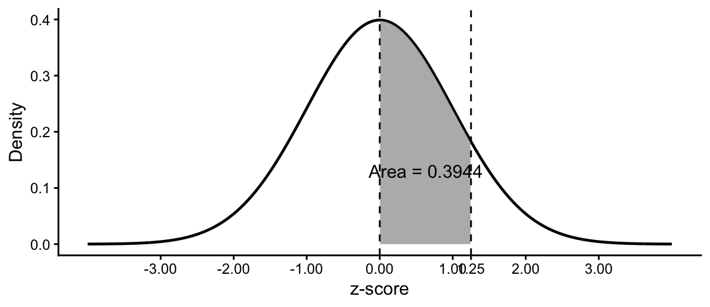

| z | Area | z | Area | z | Area |
|---|---|---|---|---|---|
| 0.00 | 0.0000 | 1.10 | 0.3643 | 2.10 | 0.4821 |
| 0.05 | 0.0199 | 1.15 | 0.3749 | 2.15 | 0.4842 |
| 0.10 | 0.0398 | 1.20 | 0.3849 | 2.20 | 0.4861 |
| 0.15 | 0.0596 | 1.25 | 0.3944 | 2.25 | 0.4878 |
| 0.20 | 0.0793 | 1.30 | 0.4032 | 2.30 | 0.4893 |
| 0.25 | 0.0987 | 1.35 | 0.4115 | 2.35 | 0.4906 |
| 0.30 | 0.1179 | 1.40 | 0.4192 | 2.40 | 0.4918 |
| 0.35 | 0.1368 | 1.45 | 0.4265 | 2.45 | 0.4929 |
| 0.40 | 0.1554 | 1.50 | 0.4332 | 2.50 | 0.4938 |
| 0.45 | 0.1736 | 1.55 | 0.4394 | 2.55 | 0.4946 |
| 0.50 | 0.1915 | 1.60 | 0.4452 | 2.58 | 0.4951 |
| 0.55 | 0.2088 | 1.64 | 0.4495 | 2.60 | 0.4953 |
| 0.60 | 0.2257 | 1.65 | 0.4505 | 2.65 | 0.4960 |
| 0.65 | 0.2422 | 1.70 | 0.4554 | 2.70 | 0.4965 |
| 0.70 | 0.2580 | 1.75 | 0.4599 | 2.75 | 0.4970 |
| 0.75 | 0.2734 | 1.80 | 0.4641 | 2.80 | 0.4974 |
| 0.80 | 0.2881 | 1.85 | 0.4678 | 2.85 | 0.4978 |
| 0.85 | 0.3023 | 1.90 | 0.4713 | 2.90 | 0.4981 |
| 0.90 | 0.3159 | 1.95 | 0.4744 | 2.95 | 0.4984 |
| 0.95 | 0.3289 | 1.96 | 0.4750 | 3.00 | 0.4987 |
| 1.00 | 0.3413 | 2.00 | 0.4772 | ||
| 1.05 | 0.3531 | 2.05 | 0.4798 |
Appendix A — Standard Normal Distribution Table
For a standard normal random variable, \(Z\), the mean is 0 and the standard deviation is 1. Each entry in the table gives the area under the standard normal curve between the mean, \(z=0\), and the listed positive z-score:
\[ A=P(0<Z<z) \]
The table does not directly report cumulative probability from negative infinity. Use symmetry and the rules below to obtain lower- and upper-tail probabilities.
A.1 Using the Table
Let \(A\) represent the area obtained from the table for the absolute value of the z-score.
| Desired probability | Calculation |
|---|---|
| \(P(Z<z)\) when \(z>0\) | \(0.5+A\) |
| \(P(Z>z)\) when \(z>0\) | \(0.5-A\) |
| \(P(Z<z)\) when \(z<0\) | \(0.5-A\) |
| \(P(Z>z)\) when \(z<0\) | \(0.5+A\) |
TipNegative z-scores
The normal distribution is symmetric. Look up the absolute value of a negative z-score and then select the appropriate rule from the table above.
A.2 Worked Example: \(z=1.25\)
The table reports an area of \(A=0.3944\) between 0 and 1.25. Therefore:
\[ P(Z<1.25)=0.5+0.3944=0.8944 \]
\[ P(Z>1.25)=0.5-0.3944=0.1056 \]
By symmetry:
\[ P(Z<-1.25)=0.1056 \]

If a calculated z-score falls between table entries, use the closest listed value unless instructed to interpolate. A z-score beyond the table represents a very small tail probability; report that it lies beyond the table rather than treating its probability as zero.